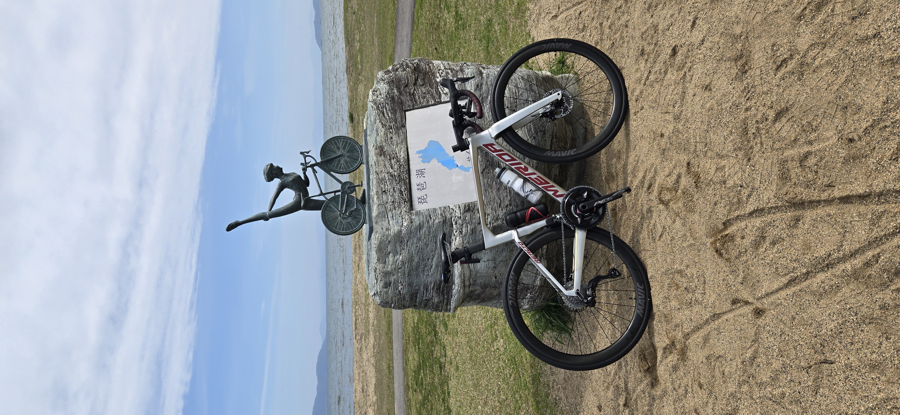

自己紹介
滋賀県在住の薬剤師です。 学生時代は陸上競技の中長距離に取り組み、 現在は仕事と両立しながら トライアスロンに挑戦しています。
ランニングは得意でしたが、 トライアスロンを始めてからは スイムが最大の課題になりました。
苦手なスイムを克服しながら、 バイクを強化し、 得意なランを活かして オリンピックディスタンス 2時間30分切りを目指しています。
職業
薬剤師
居住地
滋賀県
得意種目
ラン
現在の重点種目
スイム
陸上競技歴
学生時代は中長距離を専門としていました。 現在もランはトライアスロンで最も得意な種目です。
1500m
4分09秒
5000m
15分30秒
ハーフマラソン
69分
フルマラソン
2時間50分
トライアスロン歴
2025年に初レース
人生初のトライアスロンでは、 スイムで出遅れながらも、 バイクとランで追い上げ、 男子6位でフィニッシュしました。
長距離・ODへ挑戦
レイクビワトライアスロン、 愛南町いやしの郷トライアスロン、 伊勢志摩・里海トライアスロンなどに出場。
レースを重ねる中で、 スイム強化とバイクの巡航力向上が 重要な課題だと分かりました。
現在の目標
OLYMPIC DISTANCE
サブ2時間30分
🏊
Swim 1500m
33〜35分
🚴
Bike 40km
1時間10〜12分
🏃
Run 10km
39〜40分
⚡
FTP
240W → 250W
愛車

Bike
MERIDA REACTO 6000
詳しいレビューを見る →
Wheel
MAVIC COSMIC SL45
Helmet
OGK Kabuto AERO-R2
Bike Computer
Garmin Edge 840 Solar
Watch
Garmin Forerunner 255
Indoor Training
Zwift ＋ KICKR
このブログで発信すること
📅
練習記録
🏁
レース分析
🏊
スイム成長記録
🚴
機材レビュー
📊
Garmin・Zwift分析
💊
薬剤師目線の体調管理